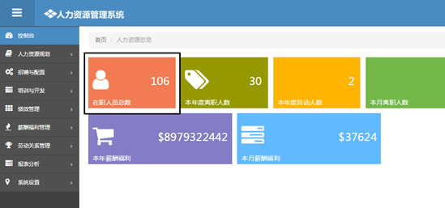
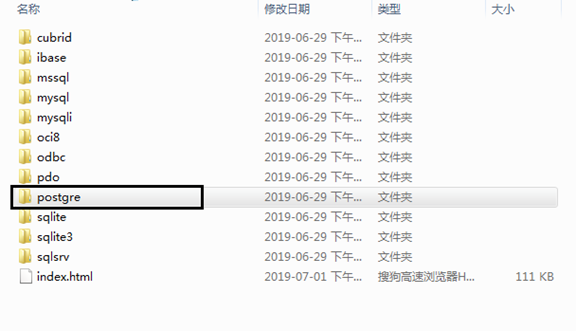
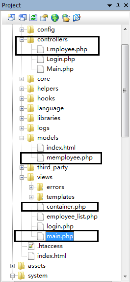
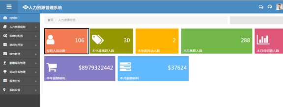
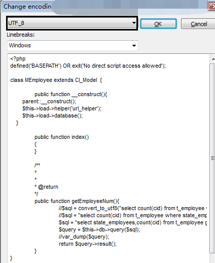

本节讲述如何连接Postgre数据库并查询与显示数据。
==================================================================================================
前几节我们搭建了环境并处理了页面的一些问题，本节我们研究如何连接真实的数据库并把数据显示在页面上。
从主页我们看到有"在职人员总数"，我们就以这个数据为例来说明：

1、建立数据集库表
CREATE TABLE "public"."t_employee" ( "cid" varchar(255) COLLATE "default" NOT NULL, "cname" varchar(255) COLLATE "default", "cname_e" varchar(255) COLLATE "default", "department_unit_code" varchar(255) COLLATE "default", "department_unit" varchar(255) COLLATE "default", "personnel_scope" varchar(255) COLLATE "default", "personnel_subscope" varchar(255) COLLATE "default", "salary_range" varchar(255) COLLATE "default", "office" varchar(255) COLLATE "default", "position_number" varchar(32) COLLATE "default", "position_name" varchar(32) COLLATE "default", "post_directory_code" varchar(255) COLLATE "default", "post_directory_name" varchar(255) COLLATE "default", "jobs_numbers" varchar(32) COLLATE "default", "jobs_name" varchar(32) COLLATE "default", "jobs_seq_name" varchar(32) COLLATE "default", "jobs_subseq_name" varchar(32) COLLATE "default", "jobs_second_name" varchar(32) COLLATE "default", "post_hierarchy_name" varchar(32) COLLATE "default", "employee_group" varchar(32) COLLATE "default", "employee_subgroup" varchar(32) COLLATE "default", "is_frontline" varchar(8) COLLATE "default", "higher_position" varchar(255) COLLATE "default", "line_manager" varchar(255) COLLATE "default", "line_manager_id" varchar(32) COLLATE "default", "hrbp_id" varchar(32) COLLATE "default", "hrbp_name" varchar(255) COLLATE "default", "nationality" varchar(32) COLLATE "default", "male" varchar(2) COLLATE "default", "marriage" varchar(4) COLLATE "default", "fertility" varchar(255) COLLATE "default", "census" varchar(255) COLLATE "default", "census_addr" varchar(255) COLLATE "default", "census_nature" varchar(255) COLLATE "default", "birthdate" date, "age" int4, "id_cards" varchar(32) COLLATE "default", "mobile_telephone" varchar(255) COLLATE "default", "enterprise_email" varchar(255) COLLATE "default", "personal_email" varchar(255) COLLATE "default", "education" varchar(255) COLLATE "default", "profession" varchar(255) COLLATE "default", "institution" varchar(255) COLLATE "default", "graduation_date" date, "bank_account" varchar(255) COLLATE "default", "payee" varchar(255) COLLATE "default", "kinsfolk" varchar(32) COLLATE "default", "kinsfolk_phone" varchar(32) COLLATE "default", "kinsfolk_relation" varchar(32) COLLATE "default", "date_of_appointment" date, "state_employees" varchar(4) COLLATE "default", "permanent_office" varchar(255) COLLATE "default", "sources_of_recruitment" varchar(255) COLLATE "default", "sources_of_secondary_recruitment" varchar(255) COLLATE "default", "date_of_entry" date, "date_of_inbloc" date, "date_of_seniority" date, "date_of_work" date, "date_of_dimission" date, "date_of_contract_start" date, "date_of_contract_end" date, "the_subject_of_contracts" varchar(255) COLLATE "default", "the_count_of_contracts" varchar(255) COLLATE "default", "is_second_work" varchar(255) COLLATE "default", "address" varchar(255) COLLATE "default", "is_competition_agreement" varchar(255) COLLATE "default", "performance_manager_name" varchar(255) COLLATE "default", "performance_manager_id" varchar(32) COLLATE "default", "profile_photo" bytea, "post_subhierarchy_name" varchar(32) COLLATE "default", "pay_rank" varchar(4) COLLATE "default", "nation" varchar(32) COLLATE "default" ) WITH (OIDS=FALSE)
; COMMENT ON COLUMN "public"."t_employee"."cid" IS '员工编号'; COMMENT ON COLUMN "public"."t_employee"."cname" IS '员工姓名'; COMMENT ON COLUMN "public"."t_employee"."cname_e" IS '员工英文名'; COMMENT ON COLUMN "public"."t_employee"."department_unit_code" IS '部门编码'; COMMENT ON COLUMN "public"."t_employee"."department_unit" IS '部门'; COMMENT ON COLUMN "public"."t_employee"."fertility" IS '生育状况'; COMMENT ON COLUMN "public"."t_employee"."census" IS '户籍所在地'; COMMENT ON COLUMN "public"."t_employee"."census_addr" IS '户籍地址'; COMMENT ON COLUMN "public"."t_employee"."census_nature" IS '户口性质'; COMMENT ON COLUMN "public"."t_employee"."education" IS '学历'; COMMENT ON COLUMN "public"."t_employee"."profession" IS '所学专业'; COMMENT ON COLUMN "public"."t_employee"."institution" IS '院校'; COMMENT ON COLUMN "public"."t_employee"."graduation_date" IS '毕业时间'; COMMENT ON COLUMN "public"."t_employee"."bank_account" IS '银行账号'; COMMENT ON COLUMN "public"."t_employee"."payee" IS '收款人'; COMMENT ON COLUMN "public"."t_employee"."date_of_dimission" IS '离职日期'; COMMENT ON COLUMN "public"."t_employee"."nation" IS '民族';
-- ---------------------------- -- Alter Sequences Owned By -- ----------------------------
-- ---------------------------- -- Primary Key structure for table t_employee -- ---------------------------- ALTER TABLE "public"."t_employee" ADD PRIMARY KEY ("cid"); |
并导入一些员工信息；
2、配置数据库连接
2.1 配置php.ini文件
去掉extension=php_pdo_pgsql.dll和extension=php_pgsql.dll之前的逗号
; extension=php_bz2.dll extension=php_curl.dll extension=php_com_dotnet.dll ;extension=php_enchant.dll extension=php_fileinfo.dll extension=php_gd2.dll extension=php_gettext.dll extension=php_gmp.dll extension=php_intl.dll extension=php_imap.dll ;extension=php_interbase.dll extension=php_ldap.dll extension=php_mbstring.dll extension=php_exif.dll ; Must be after mbstring as it depends on it extension=php_mysql.dll extension=php_mysqli.dll ;extension=php_oci8_12c.dll ; Use with Oracle Database 12c Instant Client extension=php_openssl.dll ;extension=php_pdo_firebird.dll extension=php_pdo_mysql.dll extension=php_pdo.dll extension=sqlite3.dll extension=php_pdo_sqlite.dll extension=php_pdo_oci.dll extension=php_pdo_odbc.dll extension=php_pdo_pgsql.dll extension=php_pgsql.dll ;extension=php_shmop.dll extension=php_sqlsrv_56_ts.dll |
2.2 配置CI数据库连接参数
打开application->config->database.php文件，修改默认数据库连接参数
<?php defined('BASEPATH') OR exit('No direct script access allowed');
/* | ------------------------------------------------------------------- | DATABASE CONNECTIVITY SETTINGS | ------------------------------------------------------------------- | This file will contain the settings needed to access your database. | | For complete instructions please consult the 'Database Connection' | page of the User Guide. | | ------------------------------------------------------------------- | EXPLANATION OF VARIABLES | ------------------------------------------------------------------- | | ['dsn'] The full DSN string describe a connection to the database. | ['hostname'] The hostname of your database server. | ['username'] The username used to connect to the database | ['password'] The password used to connect to the database | ['database'] The name of the database you want to connect to | ['dbdriver'] The database driver. e.g.: mysqli. | Currently supported: | cubrid, ibase, mssql, mysql, mysqli, oci8, | odbc, pdo, postgre, sqlite, sqlite3, sqlsrv | ['dbprefix'] You can add an optional prefix, which will be added | to the table name when using the Query Builder class | ['pconnect'] TRUE/FALSE - Whether to use a persistent connection | ['db_debug'] TRUE/FALSE - Whether database errors should be displayed. | ['cache_on'] TRUE/FALSE - Enables/disables query caching | ['cachedir'] The path to the folder where cache files should be stored | ['char_set'] The character set used in communicating with the database | ['dbcollat'] The character collation used in communicating with the database | NOTE: For MySQL and MySQLi databases, this setting is only used | as a backup if your server is running PHP < 5.2.3 or MySQL < 5.0.7 | (and in table creation queries made with DB Forge). | There is an incompatibility in PHP with mysql_real_escape_string() which | can make your site vulnerable to SQL injection if you are using a | multi-byte character set and are running versions lower than these. | Sites using Latin-1 or UTF-8 database character set and collation are unaffected. | ['swap_pre'] A default table prefix that should be swapped with the dbprefix | ['encrypt'] Whether or not to use an encrypted connection. | | 'mysql' (deprecated), 'sqlsrv' and 'pdo/sqlsrv' drivers accept TRUE/FALSE | 'mysqli' and 'pdo/mysql' drivers accept an array with the following options: | | 'ssl_key' - Path to the private key file | 'ssl_cert' - Path to the public key certificate file | 'ssl_ca' - Path to the certificate authority file | 'ssl_capath' - Path to a directory containing trusted CA certificates in PEM format | 'ssl_cipher' - List of *allowed* ciphers to be used for the encryption, separated by colons (':') | 'ssl_verify' - TRUE/FALSE; Whether verify the server certificate or not | | ['compress'] Whether or not to use client compression (MySQL only) | ['stricton'] TRUE/FALSE - forces 'Strict Mode' connections | - good for ensuring strict SQL while developing | ['ssl_options'] Used to set various SSL options that can be used when making SSL connections. | ['failover'] array - A array with 0 or more data for connections if the main should fail. | ['save_queries'] TRUE/FALSE - Whether to "save" all executed queries. | NOTE: Disabling this will also effectively disable both | $this->db->last_query() and profiling of DB queries. | When you run a query, with this setting set to TRUE (default), | CodeIgniter will store the SQL statement for debugging purposes. | However, this may cause high memory usage, especially if you run | a lot of SQL queries ... disable this to avoid that problem. | | The $active_group variable lets you choose which connection group to | make active. By default there is only one group (the 'default' group). | | The $query_builder variables lets you determine whether or not to load | the query builder class. */ $active_group = 'default'; $query_builder = TRUE;
$db['default'] = array( 'dsn' => '', 'hostname' => 'localhost', 'username' => 'username', 'password' => 'password', 'database' => 'SIM', 'dbdriver' => 'postgre', 'port'=>'5432', 'dbprefix' => '', 'pconnect' => FALSE, 'db_debug' => (ENVIRONMENT !== 'production'), 'cache_on' => FALSE, 'cachedir' => '', 'char_set' => 'utf8', 'dbcollat' => 'utf8_general_ci', 'swap_pre' => '', 'encrypt' => FALSE, 'compress' => FALSE, 'stricton' => FALSE, 'failover' => array(), 'save_queries' => TRUE ); |
其中需要注意几点：
1）dbdriver设置为'postgre',注意不是'postgres',为什么会是这个名字，我猜是这样：打开system\database\drivers可以看到postgre目录

这个目录下放的就是postgre数据库相关的数据库文件；
2）'port'=>'5432'，注意默认是不包含这个项的，如果电脑上安装了mysql之类的数据库，可能会有问题，所以需要增加这项，笔者的电脑上
没有设置这项显示出错；
3、建立model文件
CI采用了MVC模式，连接数据库操作需要建立model文件。
1）在application->models文件夹下新建memployee.php文件，代码如下：
<?php defined('BASEPATH') OR exit('No direct script access allowed');
class MEmployee extends CI_Model {
public function __construct(){ parent::__construct(); $this->load->database(); }
public function index() { }
/** * * * @return */ public function getEmployeeNum(){ $sql = "select state_employees,count(cid) from t_employee group by state_employees"; $query = $this->db->query($sql); //var_dump($query); return $query->result(); } } |
通过getEmployeeNum函数，我们查询在职员工数量，并返回查询数据集；注意我们首先要在构造函数中加载数据库类：
$this->load->database();
4、建立control文件
由于我们是在主页中显示'在职员工总数'这个数据，因此我们修改application->controllers->Main.php文件
<?php defined('BASEPATH') OR exit('No direct script access allowed');
class Main extends CI_Controller {
public function __construct(){ parent::__construct(); $this->load->helper('url_helper'); $this->load->model('MEmployee'); }
public function index() { $data['param'] = $this->MEmployee->getEmployeeNum(); $this->load->view('container',$data); } } |
我们通过调用Memployee->getEmployeeNum（）函数得到'在职员工数量',并通过数组$data传递到页面；
5、修改application->views->container.php文件
?php defined('BASEPATH') OR exit('No direct script access allowed'); ?> <!DOCTYPE html> <!--[if IE 8]> <html lang="en" class="ie8"> <![endif]--> <!--[if IE 9]> <html lang="en" class="ie9"> <![endif]--> <!--[if !IE]><!--> <html lang="en"> <!--<![endif]--> <?php $this->load->view('templates/header'); ?> <body class="fixed-top"> <?php $this->load->view('templates/top'); ?> <div id="container" class="row-fluid"> <?php $this->load->view('templates/menu'); ?> <div id="main-content"> <?php $this->load->view('main',$param); ?> </div> </div> <?php $this->load->view('templates/footer'); ?>
</body> </html> |
注意这句：<?php $this->load->view('main',$param); ?>，这里把参数传递到了application->views->main.php文件中；
6、修改application->views->main.php文件代码：
<div class="container-fluid"> <!-- BEGIN PAGE HEADER--> <div class="row-fluid"> <div class="span12"> <!-- BEGIN PAGE TITLE & BREADCRUMB--> <h3 class="page-title"> </h3> <ul class="breadcrumb"> <li> <a href="<?php echo site_url('main/index');?>">首页</a> <span class="divider">/</span> </li> <li class="active"> 人力资源总览 </li> <li class="pull-right search-wrap"> <form action="search_result.html" class="hidden-phone"> <div class="input-append search-input-area"> <input class="" id="appendedInputButton" type="text"> <button class="btn" type="button"><i class="fa fa-search"></i> </button> </div> </form> </li> </ul> <!-- END PAGE TITLE & BREADCRUMB--> </div> </div> <!-- END PAGE HEADER--> <!-- BEGIN PAGE CONTENT--> <div class="row-fluid"> <!--BEGIN METRO STATES--> <div class="metro-nav" id="metro-nav1"> <div class="metro-nav-block nav-block-orange"> <a data-original-title="" href="#"> <i class="fa fa-user"></i> <div class="info"><?php echo $param[0]->count; ?></div> <div class="status">在职人员总数</div> </a> </div> <div class="metro-nav-block nav-olive"> <a data-original-title="" href="#"> <i class="fa fa-tags"></i> <div class="info"><?php echo $param[1]->count; ?></div> <div class="status">本年度离职人数</div> </a> </div> <div class="metro-nav-block nav-block-yellow"> <a data-original-title="" href="#"> <i class="fa fa-comments-alt"></i> <div class="info"><?php echo $param[2]->count; ?></div> <div class="status">本年度异动人数</div> </a> </div> <div class="metro-nav-block nav-block-green double"> <a data-original-title="" href="#"> <i class="fa fa-eye-open"></i> <div class="info">288</div> <div class="status">本月离职人数</div> </a> </div> <div class="metro-nav-block nav-block-red"> <a data-original-title="" href="#"> <i class="fa fa-bar-chart"></i> <div class="info">255</div> <div class="status">本月待招聘人数</div> </a> </div> </div> <div class="metro-nav"> <div class="metro-nav-block nav-light-purple double"> <a data-original-title="" href="#"> <i class="fa fa-shopping-cart"></i> <div class="info">$8979322442</div> <div class="status">本年薪酬福利</div> </a> </div> <div class="metro-nav-block nav-light-blue double"> <a data-original-title="" href="#"> <i class="fa fa-tasks"></i> <div class="info">$37624</div> <div class="status">本月薪酬福利</div> </a> </div> </div> <div class="space10"></div> <!--END METRO STATES--> </div>
<!-- END PAGE CONTENT--> </div> |
代码中这里引用了参数
<div class="info"><?php echo $param[0]->count; ?></div> <div class="status">在职人员总数</div> |
6、目前我们的工程结构如下

7 运行测试
运行主页如下所示；

总结：
本文通过建立数据库表，设置连接参数，并分别创建了MVC的不同对象，提取数据显示在界面上，展示了CI数据库操作
的步骤与方法；
程序调试过程中一些错误的处理办法：
1、php连接postgreSQL，总是报错"Call to undefined function pg_connect()"
这是因为系统找不到dll文件造成的，一般在php.ini文件中，去掉extension=php_pdo_pgsql.dll和extension=php_pgsql.dll
之前的逗号就可以了，如果还不行，考虑pgAdmin III文件安装中是否在系统Path路径中加载了对应pgAdmin III目录；
2、在mEmployee.php文件中，我们如果使用汉字例如$sql = "select count(cid) from t_employee where
state_employees='激活'";系统有时候会报编码错误，这是因为这个文件的默认格式不对，可以按照如下方法修改
在CodeLobster IDE中，选择File->Change encoding

修改编码为UTF-8即可。
====================================The End==========================